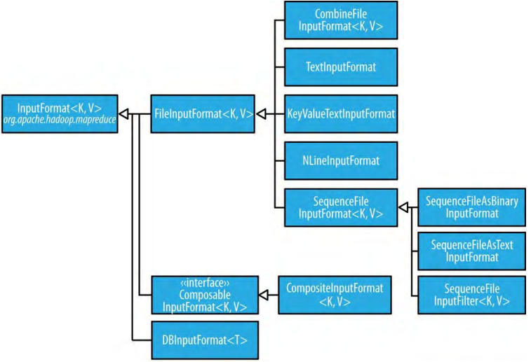
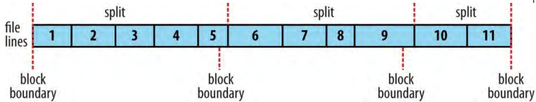

输入格式（Input Formats）
Hadoop可以处理许多不同类型的数据格式，从普通文本文件到数据库。
2.1、输入分片和记录（Input Splits and Records）
输入分片就是单一map处理的一块输入。每个map进程一个分片。每个分片分为若干记录，map处理每条记录——一个键值对——轮流地。分片和记录是逻辑上的：不需要它们被绑定为文件，尽管其常见形式都是文件。在一个数据库context中，一个分片对应于一个表的一定范围的行，一个记录对应于那个范围中的某一行（这就是DBInputFormat的情况，它是从关系型数据库读取数据的一个输入格式）。输入分片由Java类InputSplit（在包org.apache.hadoop.mapreduce中）表示：
public abstract class InputSplit {
public abstract long getLength() throws IOException, InterruptedException;
public abstract String[] getLocations() throws IOException,
InterruptedException;
}
一个InputSplit有以字节为单位的长度（大小）和一个存储位置集合，这些位置只是主机名字符串。注意，分片不包含任何的输入数据，它只是数据的引用。MapReduce系统使用这些存储位置以尽量将map tasks放在离分片数据近的位置，大小用于排序分片以使最大的分片首先被处理，这样的目的是最小化job运行时间。这是贪婪近似算法（greedy approximation algorithm）的一个实例。
写MapReduce应用时，不需要直接处理InputSplits，它们由InputFormat创建（InputFormat负责创建输入分片并把它们划分为记录）。InputFormat接口：
public abstract class InputFormat<K, V> {
public abstract List<InputSplit> getSplits(JobContext context)
throws IOException, InterruptedException;
public abstract RecordReader<K, V>
createRecordReader(InputSplit split, TaskAttemptContext context)
throws IOException, InterruptedException;
}
客户端运行job，通过调用getSpilts()方法计算分片，然后把它们发送到application master，application master使用分片的存储位置在集群上调度处理它们的map tasks。map task把分片发送给InputFormat的createRecordReader()方法来获取分片的RecordReader实例。RecordReader不仅仅是一个记录的迭代器，map task用它来生成传递给map函数的记录键值对。通过Mapper的run()方法可以了解它的作用：
public void run(Context context) throws IOException, InterruptedException {
setup(context);
while (context.nextKeyValue()) {
map(context.getCurrentKey(), context.getCurrentValue(), context);
}
cleanup(context);
}
运行setup()后，重复地调用Context的nextKeyValue()方法（Context委托RecordReader的同名方法）来为mapper的键和值赋值。通过Context的方式从RecordReader获取键和值，并把键和值传递给map()方法进行处理。当reader到达流的末尾，nextKeyValue()方法返回false，map task运行它的cleanup()方法然后结束。
注意，尽管代码片段没有展示，为了高效，RecordReader实现在每次调用getCurrentKey()和getCurrentValue()方法时会返回相同的键和值对象。只是这些对象的值被RecordReader的nextKeyValue()方法改变了。对希望键和值为不变对象且不重用的用户来说，可能有些惊讶。当键或值的引用处于map()方法外面时，随着值的改变可能会导致bugs。所以，如果要在map()方法外引用键和值，要对这些对象进行复制。例如，对于Text对象，可以使用它的构造器：new Text(value)。对于reducers也有类似的情况，reducer的迭代器的值对象也是重用的，所以在调用迭代器时需要保留某些值时要复制对应的对象。
最后，注意Mapper的run()方法是public的，可以被用户个性化。MultithreadedMapper是一个使用可配置数目（mapreduce.mapper.multithreadedmapper.threads）的线程同时运行mappers的实现。对于大多数数据处理tasks，它与默认Mapper实现相比没有优势。但是，对于每条记录都耗时很长的mappers——比如，因为它们需要和外部服务器交流——它允许多个mappers在一个JVM中运行，毫无疑问有效率优势。
2.2、FileInputFormat
图 8-2.InputFormat class hierarchy

FileInputFormat是所有使用文件作为数据源的InputFromat的实现的基本类（如图8-2）。它提供两样东西：一个用来定义那些文件作为job输入的位置，一个为输入文件生成分片的实现。把分片划分为记录的任务则由子类执行。
2.2.1、FileInputFormat input paths
job的输入是通过一个路径的集合指定的，这提供了构造输入极大的灵活性。FileInputFormat提供了四个方便的静态方法来设置Job的输入路径：
public static void addInputPath(Job job, Path path)
public static void addInputPaths(Job job, String commaSeparatedPaths)
public static void setInputPaths(Job job, Path... inputPaths)
public static void setInputPaths(Job job, String commaSeparatedPaths)
addInputPath()、addInputPaths()方法增加路径到输入集合。可以通过重复调用这些方法来构建路径集合。setInputPaths()方法则一次设置整个路径集合（替换Job中已经设置的任何路径）。
一个路径可以代表一个文件、一个目录，或者，通过使用glob（通配符），代表一个文件或者目录的集合。一个代表目录的路径包括目录中的所有文件。警告，指定为输入路径的目录的内容不会被递归地进行处理。事实上，指定的目录应该只包含文件。如果目录包含了子目录，子目录会被作为一个文件，进而会引起错误。处理这种情况的方法是使用通配符或过滤器，基于名称样式（pattern）只选择目录中的文件。或者，设置属性mapreduce.input.fileinputformat.input.dir.recursive为true，以递归地读取目录。
add和set方法只能指定包含的文件。如果排除某些文件，可以用FileInputFormat的setInputPathFilter()方法设置过滤器。即使不设置过滤器，FileInputForamt也会使用一个默认的过滤器排除隐藏文件（这些文件名字以点或下划线开始）。如果设置了过滤器，那么设置的过滤器会作为默认过滤器的补充，而不是覆盖默认过滤器。
路径和过滤器也可以通过配置属性设置（表 8-4），这对流jobs很便利。可以使用-input选项为流接口设置路径，所以，直接设置路径是不必要的。
表 8-4.Input path and filter properties
| Property name | Type | Default value | Description |
|---|---|---|---|
| mapreduce.input.fileinputformat.inputdir | 逗号分隔的路径 | 无 | job的输入文件。含有逗号的路径应该使用反斜线将逗号转义。例如通配符{a,b}应该转义为{a\,b} |
| mapreduce.input.pathFilter.class | PathFilter类名 | 无 | 用于job输入文件的过滤器 |
2.2.2、FileInputFormat input splits
FileInputForamt只切分比HDFS block大的文件。分片的大小通常是HDFS block的大小，这适用于大多数的应用，这个大小可以通过Hadoop属性设置，如表8-5：
| Property name | Type | Default value | Description |
|---|---|---|---|
| mapreduce.input.fileinputformat.split.minsize | int | 1 | 文件分片的最小尺寸，单位byte |
| mapreduce.input.fileinputformat.split.maxsize | long | Long.MAX_VALUE（i.e.，9223372036854775807） | 文件分片的最大尺寸，单位byte |
| dfs.blocksize | long | 128M（i.e.，134217728） | HDFS block大小，单位byte |
最小分片大小通常是1字节，尽管某些格式的最小分片更小。（例如，sequence文件不时会在流中插入同步条目，所以最小分片大小必须足够大来确保每个分片有一个同步点，以保证有一个可以用来重新同步记录边界）
应用可以强制实行一个最小分片大小。通过设置这个为一个比block大的只，可以强制分片比block大。使用HDFS时没有理由这样作，因为这样会增加与map task非本地的block的数量。
最大分片大小默认为Java Long类型的最大值。它只有在小于block尺寸时才会有作用，强制分片比block小。
分片尺寸通过如下公式计算：
max(minimumSize, min(maximumSize, blockSize))
默认是：
minimumSize < blockSize < maximumSize
所以，分片尺寸就是blockSize。
2.2.3、Small files and CombineFileInputFormat
Hadoop处理少数大文件时的效率要比处理大量小文件时要高。一个原因是，FileInputForamt以每个分片是一个文件的全部或一部分的方式生成分片。如果文件很小（明显小于HDFS block）很多，每个map task会只处理很少的输入，并且会有很多的tasks（每个文件一个），每个都会有额外的簿计（bookkeeping）开销。与1GB文件分为8个128MB的blocks相比，10000个100KB的文件要使用10000个map task的job执行时间可能会是一个文件8个map tasks的job执行时间的数十倍或数百倍。
通过使用CombineFileInputFormat可以缓解大量小文件的情况。CombineFileInputFormat把许多文件打包进一个分片以便每个mapper可以处理更多的文件。最重要的是，CombineFileInputFormat在决定同一个分片中放置那些blocks时考虑了节点和机架本地性，所以它可以在一个一般地MapReduce job中以不打折扣的速度处理输入。
当然，如果可能，最好避免大量小文件的情况，因为MapReduce在集群中以磁盘传输速率进行文件操作时效率最佳，处理许多小文件增加了运行job时的需要的寻道数量（number of seeks）。一项避免许多小文件的技术是使用一个sequence file合并许多小文件为大文件，如例8-4；这样，键可以作为文件名（如果不需要，可以使用NullWritable）值作为文件内容。但是，如果HDFS已经有很多小文件，那么就用CombineFileInputFormat吧。
CombineFileInputFormat不仅仅适用于小文件。处理大文件时也能带来益处，因为它会为每个节点生成一个分片，每个分片有多个blocks组成。实质上，CombineFileInputFormat将mapper消费的数据的量和HDFS中文件的block尺寸解耦（decouple）了。
2.2.4、防止分片（Preventing splitting）
有些应用不希望文件被切分，这样一个mapper就可以完整地处理每个输入文件。例如，检验一个文件中的所有记录是否是排过序的的建党方法是按序浏览文件中的记录，并检验是否每个记录不比后面的记录小。实现为一个map task，这个算法只有在一个map处理整个文件时才有效。
有些方法可以确保文件不被切分。第一个方法（quick-and-dirty，快速粗糙）是增加最小分片尺寸为比系统中最大的文件更大。把最小分片尺寸设置为最大分片尺寸（Long.MAX_VALUE）也有同样效果。第二种方法是继承想要使用的FileInputFormat的具体的子类，重写它的isSplitable()方法并返回false。例如，如下是一个不切分的TextInputFormat：
import org.apache.hadoop.fs.Path;
import org.apache.hadoop.mapreduce.JobContext;
import org.apache.hadoop.mapreduce.lib.input.TextInputFormat;
public class NonSplittableTextInputFormat extends TextInputFormat {
@Override
protected boolean isSplitable(JobContext context, Path file) {
return false;
}
}
2.2.5、mapper中的文件信息（File information in the mapper)
处理文件分片的mapper可以通过调用Mapper的Context对象的getInputSplit()方法获取输入分片的信息。当从FileInputFormat获取输入格式时，这个方法返回的InputSplit可以强转为FileSplit以访问表8-7中的文件信息：
表 8-7.File split properties
| FileSplit method | Property name | Type | Description |
|---|---|---|---|
| getPath() | mapreduce.map.input.file | Path/String | 被处理的输入文件的路径 |
| getStart() | mapreduce.map.input.start | long | 分片开始位置对应文件起点的字节偏移量 |
| getLength() | mapreduce.map.input.length | long | 以字节为单位的分片长度 |
在老的MapReduce API中，和流接口中，相同文件分片信息可以通过属性访问，这些属性可以通过mapper的配置读取。（在老的MapReduce API中，这是通过在Mapper的实现中实现configure()方法、访问JobConf对象获取。）
除了表8-7中的属性，所有的mappers和reducers都可以访问task执行环境属性（表 7-3）。
2.2.6、把整个文件作为记录处理（Processing a whole file as a record）
有时会需要mapper能够访问一个文件的全部内容。不切分文件只是一部分，还需要一个RecordReader将文件的内容作为记录的值来传送。例8-2中的WholeFileInputFormat展示了这样做的方法：
例 8-2.An InputFormat for reading a whole file as a record
public class WholeFileInputFormat
extends FileInputFormat<NullWritable, BytesWritable> {
@Override
protected boolean isSplitable(JobContext context, Path file) {
return false;
}
@Override
public RecordReader<NullWritable, BytesWritable> createRecordReader(
InputSplit split, TaskAttemptContext context) throws IOException,
InterruptedException {
WholeFileRecordReader reader = new WholeFileRecordReader();
reader.initialize(split, context);
return reader;
}
}
WholeFileInputFormat定义了一个格式，其中键是没用的，用NullWritable表示，值是文件的内容，用BytesWritable实例表示。它定义了两个方法。第一个，通过重写isSplitable()并返回false，这个格式指定输入文件不能被切分。第二个，实现了createRecordReader()方法返回一个自定义的RecordReader实现，这个实现如例8-3所示：
例 8-3.The RecordReader used by WholeFileInputFormat for reading a whole file as a record.
class WholeFileRecordReader extends RecordReader<NullWritable, BytesWritable> {
private FileSplit fileSplit;
private Configuration conf;
private BytesWritable value = new BytesWritable();
private boolean processed = false;
@Override
public void initialize(InputSplit split, TaskAttemptContext context)
throws IOException, InterruptedException {
this.fileSplit = (FileSplit) split;
this.conf = context.getConfiguration();
}
@Override
public boolean nextKeyValue() throws IOException, InterruptedException {
if (!processed) {
byte[] contents = new byte[(int) fileSplit.getLength()];
Path file = fileSplit.getPath();
FileSystem fs = file.getFileSystem(conf);
FSDataInputStream in = null;
try {
in = fs.open(file);
IOUtils.readFully(in, contents, 0, contents.length);
value.set(contents, 0, contents.length);
} finally {
IOUtils.closeStream(in);
}
processed = true;
return true;
}
return false;
}
@Override
public NullWritable getCurrentKey() throws IOException, InterruptedException {
return NullWritable.get();
}
@Override
public BytesWritable getCurrentValue() throws IOException,
InterruptedException {
return value;
}
@Override
public float getProgress() throws IOException {
return processed ? 1.0f : 0.0f;
}
@Override
public void close() throws IOException {
// do nothing
}
}
WholeFileRecordReader负责获取FileSplit，并使用null作为键和包含文件字节数据的值，把它转化为一条记录。因为只有一条记录，WholeFileRecordReader要么处理过要么没处理过，所以它维护一个名为processed的Boolean属性。如果当调用nextKeyValue()方法时文件没有被处理过，那么打开这个文件，创建一个与文件大小相等的字节数组，并使用Hadoop的IOUtils类复制文件到字节数组中。然后，将这个字节数组设置在BytesWritable实例上，这个实例会被传递给next()方法，接着，返回true来表示已经读过记录。
其它方法都是直截了当簿记方法用来访问键和值、获取reader的进度、和一个close()方法，当reader执行完毕MapReduce框架会调用close()方法。
WholeFileInputFormat的使用，如例8-4：
例 8-4. A MapReduce program for packing a collection of small files as a single SequenceFile
public class SmallFilesToSequenceFileConverter extends Configured
implements Tool {
static class SequenceFileMapper
extends Mapper<NullWritable, BytesWritable, Text, BytesWritable> {
private Text filenameKey;
@Override
protected void setup(Context context) throws IOException,
InterruptedException {
InputSplit split = context.getInputSplit();
Path path = ((FileSplit) split).getPath();
filenameKey = new Text(path.toString());
}
@Override
protected void map(NullWritable key, BytesWritable value, Context context)
throws IOException, InterruptedException {
context.write(filenameKey, value);
}
}
@Override
public int run(String[] args) throws Exception {
Job job = JobBuilder.parseInputAndOutput(this, getConf(), args);
if (job == null) {
return -1;
}
job.setInputFormatClass(WholeFileInputFormat.class);
job.setOutputFormatClass(SequenceFileOutputFormat.class);
job.setOutputKeyClass(Text.class);
job.setOutputValueClass(BytesWritable.class);
job.setMapperClass(SequenceFileMapper.class);
return job.waitForCompletion(true) ? 0 : 1;
}
public static void main(String[] args) throws Exception {
int exitCode = ToolRunner.run(new SmallFilesToSequenceFileConverter(), args);
System.exit(exitCode);
}
}
因为输入格式是WholeFileInputFormat，mapper只需要找到输入文件分片的文件名。通过将context的InputSplit强制转换为FileSplit，来获取文件路径。将路径保存在Text对象中作为键。reducer是默认的（没有明确设置），输出格式是SequenceFileOutputFormat。
用一些小文件作为输入运行：
% hadoop jar hadoop-examples.jar SmallFilesToSequenceFileConverter \
-conf conf/hadoop-localhost.xml -D mapreduce.job.reduces=2 \
input/smallfiles output
创建了两个part文件，都是sequence文件。可以使用-text选项查看这两个文件：
% hadoop fs -conf conf/hadoop-localhost.xml -text output/part-r-00000
hdfs://localhost/user/tom/input/smallfiles/a 61 61 61 61 61 61 61 61 61 61
hdfs://localhost/user/tom/input/smallfiles/c 63 63 63 63 63 63 63 63 63 63
hdfs://localhost/user/tom/input/smallfiles/e
% hadoop fs -conf conf/hadoop-localhost.xml -text output/part-r-00001
hdfs://localhost/user/tom/input/smallfiles/b 62 62 62 62 62 62 62 62 62 62
hdfs://localhost/user/tom/input/smallfiles/d 64 64 64 64 64 64 64 64 64 64
hdfs://localhost/user/tom/input/smallfiles/f 66 66 66 66 66 66 66 66 66 66
输入文件名为a，b，c，d，e，f，除了e为空文件，每个文件包含与它们文件名对应的10个字母（例如，文件a包含10个a字符）。在sequence文件的文本呈现中，可以看到每行是文件名跟着文件内容的hex表示。
这个程序还有可优化的地方。如先前所说，每个文件一个mapper是不高效的，所以继承CombineFileInputFormat会是比继承FileInputFormat更好的方法。
2.3、文本输入（Text input）
Hadoop擅长处理非结构化的文本。接下来，将介绍Hadoop提供的处理文本的InputFormats。
2.3.1、TextInputFormat
TextInputFormat是默认的InputFormat。每条记录是一行的输入。键是LongWritable，是输入行距离文件开始的字节偏移量。值是包装输入行的内容的Text对象，不包含任何行休止符（例如，换行或者回车）。所以，包含如下文本的文件：
On the top of the Crumpetty Tree
The Quangle Wangle sat,
But his face you could not see,
On account of his Beaver Hat.
被划分为四条记录的一个分片。其中的记录可以被翻译为如下的价值对：
(0, On the top of the Crumpetty Tree)
(33, The Quangle Wangle sat,)
(57, But his face you could not see,)
(89, On account of his Beaver Hat.)
很明显，键不是行编号。如果文件以字节为边界而不是以行为边界进行分片，将不可能进行通用的分片实现。分片是独立处理的。行号是一个顺序的概念，读取时要保留行的计数，所以知道分片中的行号是可能的，但是知道文件中的行号是不可能的。
但是，每个分片独立地知道每行在文件中的偏移量，因为每个分片知道后续分片的大小，只需要将分片大小与偏移量相加便可以知道全局文件偏移量。偏移量对于需要每一行都有一个唯一标识符的应用来说是足够的。与文件名结合，在文件系统中行偏移量就是唯一的。当然，如果每行都是固定长度，计算行号只需要用偏移量除以行的长度。
输入分片和HDFS blocks的关系：FileInputFormats定义的逻辑上的记录通常不能整齐地契合HDFS blocks。例如，TextInputFormat的逻辑记录是行，经常会跨HDFS边界。这和程序的运行无关——例如，不会破坏行也不会错过行内容——但是还是需要了解的，因为这意味着数据本地的maps（即，和输入数据在同一个主机上运行的maps）可能会进行一些远程的读取。这引起的开销一般不显著。
图 8-3.Logical records and HDFS blocks for TextInputFormat

如图8-3，一个文件被分为行，行边界和HDFS block边界没有完美对应。分片是以逻辑记录边界为准的（在这里即行），所以第一个分片包含5行，即使它跨第一个和第二个block。第二个分片从第六行开始。
2.3.2、控制最大行长度（Controlling the maximum line length）
如果使用了某种文本输入格式，可以设置最大行长度来避免损坏的文件。文件的损坏可能会表现为一个非常长的行，这可能会导致内存溢出错误和任务失败。通过设置mapreduce.input.linerecordreader.line.maxlength属性为一个符合内存的字节值（并且恰好比输入数据的行的长度大），就可以确保record reader会跳过（长的）损坏的行而不会导致任务失败。
2.4、KeyValueTextInputForamt
TextInputFormat的键是文件中的偏移量，一般没什么用。有时，文件中的每行会是一个分隔符（例如制表符）分隔的键值对。例如，TextOutputFormat，Hadoop的默认OutputFormat，它的输出就是这种格式。KeyValueTextInputForamt正合适读取这种文件。可以通过属性mapreduce.input.keyvaluelinerecordreader.key.value.separator指定分隔符，默认为制表符。如下输入文件（→代表制表符）：
line1→On the top of the Crumpetty Tree
line2→The Quangle Wangle sat,
line3→But his face you could not see,
line4→On account of his Beaver Hat.
与TextInputFormat类似，输入为一个分片中的四条记录，但是键是每行制表符前面的Text：
(line1, On the top of the Crumpetty Tree)
(line2, The Quangle Wangle sat,)
(line3, But his face you could not see,)
(line4, On account of his Beaver Hat.)
2.5、NLineInputFormat
对于TextInputFormat和KeyValueTextInputFormat，每个mapper获得的输入行数是不固定的，根据文件和分片的大小变化。如果mapper想要的是固定行数的输入，要使用的InputFormat是NLineInputFormat。与TextInputFormat一样，键是文件中的字节偏移量，值是行本身。
N（属性mapreduce.input.lineinputformat.linespermap控制）指的是每个mapper接收的行的个数。N默认为1，即每个mapper只接收输入的一行。对于如下输入：
On the top of the Crumpetty Tree
The Quangle Wangle sat,
But his face you could not see,
On account of his Beaver Hat.
例如，N为2，那么每个分片包含2行。每个mapper接收两个键值对，分别为：
(0, On the top of the Crumpetty Tree)
(33, The Quangle Wangle sat,)
和
(57, But his face you could not see,)
(89, On account of his Beaver Hat.)
通常，一个map task处理很少量的输入是低效的（因为task设置的开销），但是游戏应用处理少量输入并且对输入进行大量的运算（例如，CPU-密集的），然后输出结果。模拟是一个好的例子。通过创建一个输入文件指定输入参数，每行一个，可以进行参数扫描（parameter sweep）：并行运行一系列的模拟，来找出随着参数改变模型的如何变化。警告：如果模拟运行时间过长，会超时。可以通过定期写状态消息或增加counter的值（向application master报告进度），以防止超时。
另一个例子，是使用Hadoop从多个数据源（例如数据库）引导数据加载（bootstrap data loading）。创建一个“种子”文件内容为数据源，每行一个。然后，每个mapper分配一个数据源，把数据从数据源加载进HDFS。这种job不需要reduce阶段，所以reducer的数量应该设置为0（调用Job的setNumReduceTasks()方法）。此外，MapReduce jobs也可以用来处理加载进HDFS的数据。
2.6、XML
大多数的XML解析器操作整个XML文档，如果XML文档由多个输入分片组成，分别进行解析是有难度的。当然，（如果文档不是太大）可以使用WholeFileInputFormat（例 8-2）在一个mapper中处理整个XML文档。
由一系列“记录”（XML文档片段）组成的大型的XML文档，使用简单字符串或者正则表达式匹配来找到记录的的开始和结束标签，可以将大型XML文档切分为记录。当框架将文档切分后这个问题就简单了，因为通过从分片开始位置简单地扫描很容易找到下一条记录的开始标签，就像TextInputFormat找到新行边界一样。
Hadoop带有一个处理XML文档的类叫做StreamRecordReader（在org.apache.hadoop.streaming.mapreduce包中，但是可以在流以外使用）。通过设置输入格式为StreamInputFormat并且设置stream.recordreader.class属性为org.apache.hadoop.streaming.mapreduce.StreamXmlRecordReader，就可以使用StreamRecordReader。通过设置job配置属性来配置这个reader使用的开始结束标签样式（查看网站）。
2.7、二进制输入（Binary Input）
Hadoop MapReduce没有被限制为处理文本数据。也可以处理二进制格式数据。
2.7.1、SequenceFileInputFormat
Hadoop的顺序文件格式保存二进制键值对序列。顺序文件很适合作为MapReduce数据的格式因为它是可切分的（它有同步点，reader可以从文件中任意位置同步记录边界，例如分片的开始位置），它支持压缩，通过使用多种序列化框架它可以存储任意类型。
可以使用SequenceFileInputFormat，来使用顺序文件作为MapReduce的输入。键和值由顺序文件决定，要确保map输入类型与之对应。例如，顺序文件的键为IntWritable，值为Text，map的签名应该是Mapper<IntWritable, Text, K, V>，其中K和V是map输出的键、值的类型。
另外，SequenceFileInputFormat可以像读顺序文件那样读map文件。如果它找到一个目录（并期望读取的是属性文件），SequenceFileInputFormat会假设它正在读取一个map文件并用它的数据文件（datafile）。所以，没有MapFileInputFormat类。
2.7.2、SequenceFileAsTextInputFormat
SequenceFileAsTextInputFormat是SequenceFileAsBinaryInputFormat的一个变种，它把顺序文件的键和值转换为Text对象。这种转换通过调用键和值的toString()方法进行。这个格式使顺序文件适合于作为流的输入。
2.7.3、SequenceFileAsBinaryInputFormat
SequenceFileAsBinaryInputFormat是SequenceFileAsBinaryInputFormat的一个变种，以不透明（opaque）二进值对象获取顺序文件的键和值。它们是被封装为BytesWritable对象，应用可以随意地处理它们底层的二进制数组。与使用SequenceFile.Writer的appendRaw()方法创建顺序文件的线程或者SequenceFileAsBinaryOutputFormat联合使用，这就是MapReduce使用任何二进制数据类型的一种方法，但是使用Hadoop的序列化机制一般是更直观的选择（cleaner alternative）。
2.7.4、FixedLengthInputFormat
当记录不是被分隔符分隔的时候，FixedLengthInputFormat用于从文件读取定长的二进制记录。记录长度通过fixedlengthinputformat.record.length属性设置。
2.8、多输入（Multiple Inputs）
尽管MapReduce job的输入可能由多种输入构成（由文件通配符、过滤器和普通路径构成的组合），所有的输入都是由唯一一个InputFormat和唯一一个Mapper处理。但是经常遇到的是，数据格式随着时间变化，所以必须使mapper兼容所有老的格式。或者，数据源以不同的格式提供相同类型的数据。在不同数据集进行joins操作是也有这个问题。例如，一个是制表符分隔的普通文本，另一个是二进制顺序文件。即使，它们是相同的格式，它们可能有不同的表示，因而需要区别地进行解析。
使用MultipleInputs类可以优雅地处理这些情况，通过它可以为每个路径指定使用的InputFormat和Mapper。例如，有UK Met Office的天气数据，想要与NCDC的数据结合使用来进行最大温度分析，可以进行如下设置：
MultipleInputs.addInputPath(job, ncdcInputPath,
TextInputFormat.class, MaxTemperatureMapper.class);
MultipleInputs.addInputPath(job, metOfficeInputPath,
TextInputFormat.class, MetOfficeMaxTemperatureMapper.class);
用这段代码替换一般的FileInputFormat.addInputPath()和job.setMapperClass()。UK Met Office和NCDC的数据都是文本形式的，所以每个都用TextInputFormat。重要的是，MaxTemperatureMapper、MetOfficeMaxTemperatureMapper输出应该是相同的类型，因为reducers（都是相同类型）看到的是聚合的map输出并且不会知道它们来自那些mappers。
MultipleInputs类有一个重载的addInputPath()方法：
public static void addInputPath(Job job, Path path,
Class<? extends InputFormat> inputFormatClass)
它没有mapper参数，这在只有一个mapper，但是多个输入格式的时候很有用。
2.9、Database Input（and Output）
DBInputFormat是一个使用JDBC从关系型数据库读取数据的输入格式。它没有分片能力（sharding capabilities），所以需要注意不能运行太多mappers以防止数据库被拉崩溃。正因如此，最好将它用于加载相对小的数据集，或许用于使用MultipleInputs和HDFS的大型数据集进行join。对应输出格式是DBOutputFormat，它被用于把job输出加载到数据库。
在关系型数据库和HDFS之间移动数据的另一个选择是使用Sqoop。
HBase的TableInputFormat允许MapReduce程序操作HBase表中的数据。TableOutputFormat用于将MapReduce输出写到HBase表。